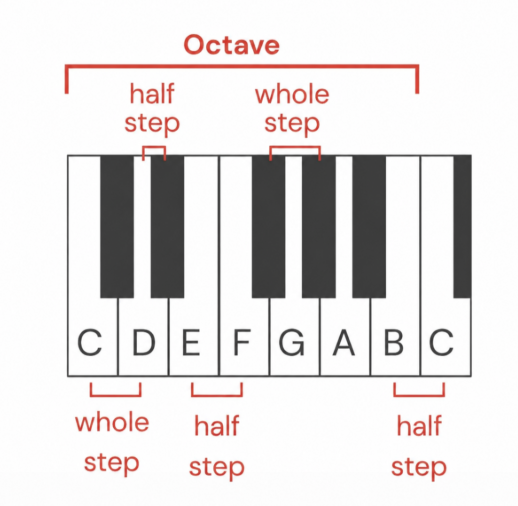

Notes
Sound is made up of vibrations and our ears and brains are really good at interpreting these vibrations.
When the vibrations are faster we hear it as being higher and when the vibrations are slower we hear them as lower.
If the vibrations happen at a consistent rate then we perceive them as having a consistent pitch or frequency.
The vast majority of music is made up of only 12 notes and how they are related to one another!!!
They are - C , C# /Db , D , D# / Eb , E , F , F# / Gb , G , G# / Ab , A , A# / Bb , B , C
(we will learn about what # and b mean in a bit ....)

As a culture we've discovered which notes sound good together and which don't, this relation of notes has mathematical reasoning behind it it's not required to know as of right now
We've given the notes names so it's easy to refer to them and the names relate to the layout of a piano keyboard. The white notes are named A through G.
The Black Keys are named relative to the white keys with the words sharp and flat. Sharp means higher and flat means lower.
So for example we take the F# note, it's above an F so it's an F sharp, but it's also below this G so it's also Gb.
So "#" means higher and "b" means lower.
We can call the same note sharp or flat but when do we call which note what and when?
We in most cases call a note sharp as it is simpler to understand but there may be some exceptions.
There are a lot more than just twelve keys on this keyboard, but the same notes actually repeat themselves higher and lower. Our brains can tell when a vibration is twice as fast as another one; it sounds like the same note.
This distance of going twelve notes up or down to the next identically named note is called an octave.
The increment between each individual note is called a semitone or a half-step, and the increment between two half steps is called a whole step or a whole tone or a tone.

Music is built on the relationships between these notes and there are common combinations of notes that we call a key *not to be confused with keys on the keyboard*
A key is sort of a guide which tells us which notes sound good together in a piece of music.
Most pieces of music only use one key. Most songs don't use all the 12 notes; they mainly only use 7 notes because there are 7 notes in a major and minor key which are the most common keys.
Let's look at the C major scale and the relationships between the notes in the scale. It is the easiest to understand as it has all white keys.
So in the key of C we have the notes - C,D,E,F,G,A,B,C (The last C is the next octave up) here the C note is called the root note.
Notice as we go up the scale the notes have the spacing of whole whole half whole whole whole half ( W W H W W W H). We go up 2, up 2, up 1, up 2, up 2, up 2, up 1.
That is the formula to make a Major scale!!!
So you know if you play a song in the major key you will majorly or exclusively only use these notes because they will sound better than the notes that are not in C major. It is also common practice that we label our notes in a scale for our ease so C is 1 and in that pattern D-2, E-3,F-4, G-5, A-6, B-7.
Think you understans everything ??? test your self by doing the first lesson in the "Music Theory practice"section on the first page !!!